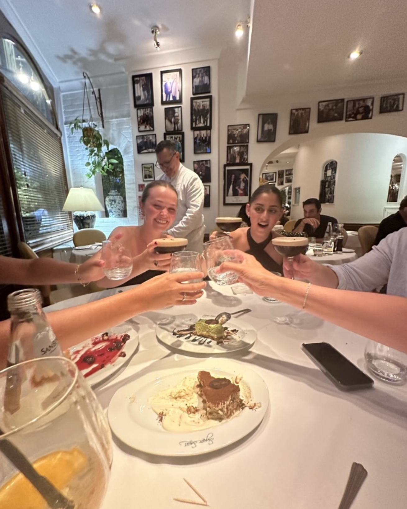
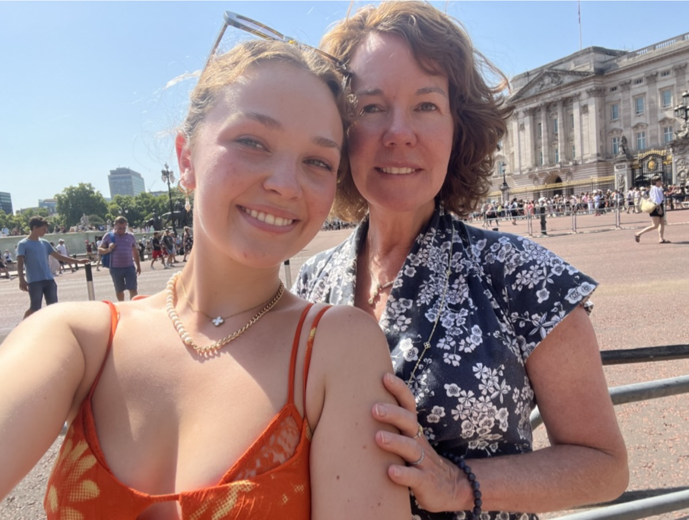

I arrived in London early in the morning, eager to visit one of my closest high school friends, Marina. She had been studying abroad at the London School of Economics over the summer, and since I’d spent much of my own summer away, I hadn’t had many chances to reconnect with friends from home. It was wonderful to finally catch up and spend time together. And what better way to do it than over afternoon tea? We spent the day sipping tea and chatting, sharing stories of our recent experiences. It was a perfect day in every way.

Later that evening, Marina's family came to visit her. As I mentioned, Marina and I went to high school together, so I've had the wonderful opportunity to get to know her family well. We celebrated her parents' 25th anniversary at an Italian restaurant called "Signor Sassi." The restaurant was adorned with photos of various celebrities who had dined there, and it was easy to see why they had attracted so many high-profile patrons—it was some of the most delicious food I’ve ever had. A perfect ending to the day!

London is such a special city to me, as I’ve mentioned before. However, my most cherished memories come from the first time I visited with my mom. She was traveling for work, and since I had nothing better to do, I tagged along. That trip marked the beginning of what has now become a tradition: whenever she has a work trip to an exciting destination, we turn it into a girls' trip. I get some time to explore the city on my own while also enjoying the experience together. On that first trip to London, I had so much fun exploring—both through my mom’s amazing activity list and my solo adventures—that I knew studying abroad was something I really wanted to pursue. Returning to the city that originally inspired this dream felt incredibly full circle!

{kind=link}
{kind=link}